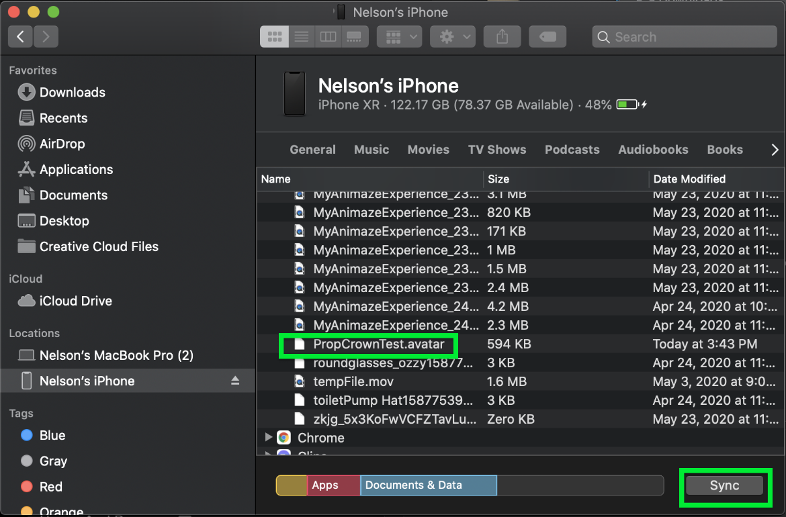

小道具の.avatarファイルをiOSアプリのAnimaze Avatarに送信する方法（MacにおいてFinderを経由）
.avatarファイル形式は、3D/2Dアバター、小道具、背景など、複数の種類のアバターを保管するコンテナの役割を果たします。
.avatarファイルが既に準備できている場合、以下の手順により、FinderからiPhoneに送信することができます。アーティストパスが必要になるため、設定 > Animazeエディター > エディターに接続 > 接続から、iOSモバイルアプリでアーティストパスを購入してください
アーティストパスを手に入れたら、開始準備完了です！
-
スマホをMacに接続します
-
Finderに移動して、あなたのスマホを選択します

-
スマホを選択したら、ファイルを選択します

-
Animazeを選択します

-
.avatarファイルを保管場所からAnimazeアプリのウィンドウにドラッグ＆ドロップして、「同期」ボタンを押します

-
Animazeアプリを再起動してアバターギャラリーを開き、カスタマイズするアバターを選択します

-
カスタマイズ画面の帽子オプションで、スマホへ送信した小道具を見つけます

-
その小道具を選択し、必要に応じてスライダーを左右にドラッグしてサイズを調整し、アバターの頭に合わせます。合わせ終わったら緑色のチェックマークをクリックします

-
保存するスロットを選択します

-
メイン画面に王冠をかぶったアバターが表示されます

面白い動画や画像の制作をお楽しみください！